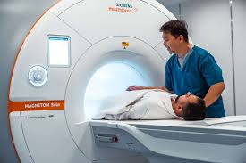

Accident & Emergency Care
Primary Care
Routine check-ups, preventive care, management of chronic diseases.
Family Medicine
Comprehensive care for individuals of all ages, focusing on overall health.
Inpatient Services
General Medicine
for a wide range of illnesses requiring hospitalization.
Surgery
Operating rooms for surgical procedures, including general surgery, orthopedic surgery, and more.
Intensive Care Unit (ICU)
Specialized care for critically ill patients.
Outpatient Services
Consultations
Appointments with specialists for diagnosis and treatment.
Day Surgery
Minor surgeries where patients can go home the same day.
Diagnostic Services
Imaging (e.g., X-rays, MRI, CT scans), laboratory tests, and other diagnostic procedures.
Specialized Care
Cardiology
Heart-related care, including diagnostics and surgery.
Neurology
Care for brain and nervous system disorders.
Oncology
Cancer treatment, including chemotherapy and radiation.
Pediatrics
Healthcare for infants, children, and adolescents.
Obstetrics and Gynecology (OB/GYN)
Care for pregnant women, childbirth, and women’s health.
Rehabilitation Services

Physical Therapy
Treatment to improve mobility and physical function.
Occupational Therapy
Assistance with daily activities and work-related tasks.
Speech Therapy
Help with speech, language, and swallowing disorders
Ancillary Services
Pharmacy
On-site pharmacy for prescription medications.
Laboratory
Blood tests, urinalysis, and other diagnostic lab services.
Radiology
Imaging services like X-rays, MRIs, and CT scans.
Support Services
Social Services
Assistance with financial, social, and emotional needs.
Patient Education
Information and resources to help patients manage their health.
Chaplaincy
Spiritual support for patients and families.
Preventive and Wellness Services
Vaccinations
Immunizations for various diseases.
Health Screenings
Regular check-ups and screenings for conditions like hypertension, diabetes, and cancer.
Health Education
Programs and workshops on healthy living, disease prevention, and wellness.